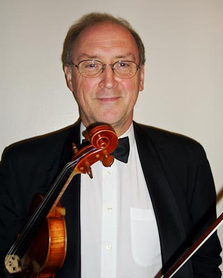

Jan Kaznowski

Jan Kaznowski heads the string faculty of Bedfordshire Music. He is the eldest of six children who all played instruments and started the violin at the age of eleven, studying at the Royal Academy of Music with David Martin and Sidney Griller and later at the Warsaw Conservatoire. While reading anthropology at Cambridge University he led the university orchestra and chamber orchestra and was appointed the assistant conductor of the University Orchestra. It was there that he performed the Beethoven triple concerto with his sister and brother Michal as soloists. After many years as a professional violinist, as a member of the orchestras of Welsh and English National operas and the BBC symphony orchestra he joined the Bedfordshire Music Service in 1988. Since then he has contributed to many aspects of musical life in Bedford, leading Bedford Sinfonia for 25 years and his own quartet for the last 19 years. He is the conductor of the Bedfordshire County Second Orchestra and together with David Knight conducts the North Bedfordshire Youth Chamber Orchestra. In 1990 he founded the county chamber music course which he continues to direct. He has played concertos with many local orchestras including the Bedfordshire Symphony Orchestra, Bedford Sinfonia, Luton Symphony Orchestra and Milton Keynes Sinfonia and has appeared as soloist regularly with the St Neots Sinfonia with whom he has played concertos by Mendelssohn, Bruch, Beethoven Dvorak and Saint-Saens.
His professional appearances with his brother Michal, with whom he played regularly in a piano trio while at school, have been much more sporadic recently. Notably they played in a programme of string quartets in the Cambridge Senate House to celebrate twenty years of the Cambridge violin making school for amateurs which was run by Juliet Beament, but he also played in the violin section of the BBC Welsh Orchestra when Michal was co-principal and led the Royal Ballet Orchestra when Michal was principal cello. He also played a number of times as second viola in concerts of string quintets by Brahms and Mozart with the Maggini quartet. This is a chance to play a work he always hoped they would be able to do together.